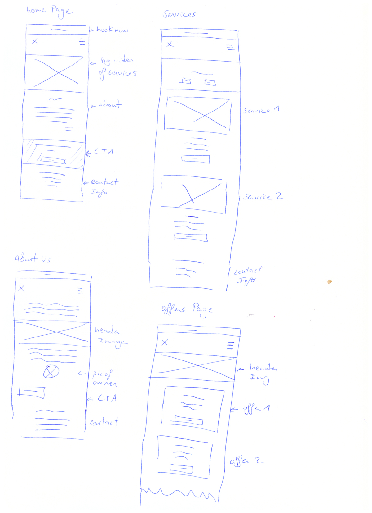

website:
maryamhairandbeauty.co.uk
The Project
To redesign and improve the user experience and overall user interface of a website for a Salon owner
My Role
- To identify and tackle the issues within the current design
- Redesign the site by applying the solutions to the issues
- Take photos of the salon, different services and products to use for the site
- Apply my redesigns using WordPress
The Problem
MHB is a salon in central london that offers a wide range of services from hairdressing to massages and Henna designs. Salon websites are very rich with content and updated frequently with new offers and prices. The problem was to take the current design and redesign it to make the experience of visiting the site as smooth as it can be. Having an existing design of the product - I did some revisions and went over it multiple times to outline the major problem that need to be addressed. Website wasn’t responsive - not mobile friendly. Really frustrating to finish a task - to find out the contact number of the salon I had to navigate to different pages. The ‘look’ of the site didn’t match the salon - the site was built on a theme and not alot of customisation was made. Consistency - throughout the site, consistency was lacking in terms of design, colour palette and other design elements. These were the major design flaws I came across in the early stages of reviewing the current design. Upon applying solutions to these flaws, new ones arose. These were tackled in the iteration process.
The Solution
Understanding business goals
To be able to redesign effectively - first thing first business goals needed to be discussed and understood. Is this website being used to promote services and their current offers they have? Is it needed to boost clientele and try to increase sales and bookings? A website design is dependent on the goal of the business - in this case, the goal was to have a platform where customers can go to - look at what services are being offered, browse all the discounts and offers provided and to be able to book appointments.
The current content and its architecture redesign to meet the business goals
The current state of the site before any redesign was applied wasn’t meeting most of the business goals. The site was rich of content about services and offers but this content wasn’t very easy to reach or even navigate through.
We don't read pages, we scan them
Having lots of rich content and text on your page can be overwhelming. As Steve Kurg mentions in his ‘Don’t make me think’ book, he mentions that users don’t read web pages, they scan/skim through them trying to find a phrase or a button that catches their eye.

CTA
Call to Action buttons are one of the most important things when it comes to achieving the website goals. It can direct, have user take a desired action and improve conversions rate. In a website where one of the top goals is getting more bookings and clientele, have CTA across all the whole website will improve conversion rates.
You're Here
Navigation - is large website that has multiple goals and different content - presenting a navigation helps user find whatever they’re looking for. Gives them a quick access to what they want without scrolling or scanning through pages. referencing ‘Don’t make me think’ - website navigation tells you what’s here. It reveals the content. By presenting a navigation the user, picks what content they want on their screen by clicking on the appropriate link instead of being overwhelmed by all the content on the same page.

Landing Page
Landing pages can be seen as a quick summary for the whole site. It contains snippets on what’s available to see. Similar to navigation - landing pages are a great tool to guide people in right direction whether its seeing what services the salon have, what offers they have available at the moment and booking appointments with call to action buttons being presented along the way.
Bringing it all together
Wireframes

First few wireframes for MHB
InVision - Low Fidelity Prototype
InVision - Low Fidelity Prototype
After wireframing a few pages with the clients as I'd like to be involved as much as possible, and get their feedback on the spot. I later on transfer these into low fidelity mockups using InVision
Link to live prototype: https://goo.gl/ge4phu
Adobe XD - High Fidelity Prototype
After a couple of revisions and feedback for the low fidelity mock-up it's time to produce a high fid. design to give the client a better understanding of the UI.